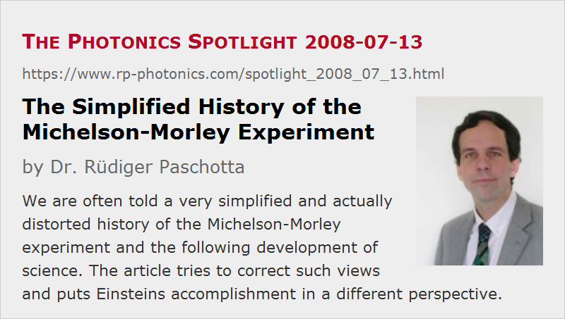

The Simplified History of the Michelson–Morley Experiment
Posted on 2008-07-13 as a part of the Photonics Spotlight (available as e-mail newsletter!)
Permanent link: https://www.rp-photonics.com/spotlight_2008_07_13.html
Author: Dr. Rüdiger Paschotta, RP Photonics Consulting GmbH
Abstract: We are often told a very simplified and actually distorted history of the Michelson-Morley experiment and the following development of science. The article tries to correct such views and puts Einsteins accomplishment in a different perspective.

Ref.: encyclopedia article on the velocity of light; Wikipedia article on the Michelson–Morley experiment
We are often told the following simplified history of science: Originally, people assumed that light propagates in a kind of medium, called the light aether (or ether), just as sound waves propagate in air, only that this aether is much more difficult to detect than air. In 1887, however, Albert Michelson conducted his famous experiment, later refined in collaboration with Edward Morley, where an interferometer was used. The experimenters hoped to detect different velocities of light in two orthogonal directions, caused by the movement of Earth through the aether, but they could not find the expected difference in velocities. Therefore, it had to be concluded that there is no light aether, and consequently Einstein developed his theory of relativity, where the velocity of light is constant.
This report is easy to grasp, only it is quite wrong. The above mentioned Wikipedia article gives a more detailed account. Michelson did measure some difference in velocity, only it was several times smaller than expected. For a long time, his interpretation was that there must be some hidden flaw of the experiment. The difficulties inspired a number of other researchers to do further refined experiments, trying to eliminate various conceivable experimental errors. Probably most notable is the idea that the aether might be dragged along by Earth, by the walls of the laboratory, or by the interferometer setup itself. Special care to deal with this problem was taken by Dayton Miller, who used a shed with very thin walls, and indeed reported a significant velocity difference, which was about three times smaller than expected, but showed more or less the expected dependence on the rotation angle of the device and a further variation according to Earth's rotation around its axis. The too small velocity difference could be relatively easily interpreted as a partial drag of the aether.
However, other researchers could not reproduce these results. An extensive discussion took place at a conference in 1928, and the issue was still not settled at that time. In 1958, Charles H. Townes used a maser to achieve a strongly improved accuracy and set a very small limit on any possible velocity differences. Later experiments had a further improved accuracy, and there was less and less room to believe in Miller's results. It is very clear, however, that Einstein's theory of relativity, presented already in 1905, could not possibly be based on an experimental disproof of the aether. Instead, Einstein largely relied on theoretical reasoning, and was hardly impressed by the available experimental results. The idea that Maxwell's equations could be valid in every inertial system, and not just in the one where the aether rests, appeared so beautiful to him that he was prepared to accept rather counter-intuitive consequences. The first one is that the velocity of light must be constant, and this rather directly leads to the Lorentz transformation and to the above-mentioned statements. Einstein's decisive accomplishment was probably to realize that although the mentioned consequences are mind-boggling indeed, this leads to a much more elegant theory than was possible with any attempt to restrict Maxwell's equations to some aether system. And of course, the theory of relativity was later on supported by a growing body of impressive experimental confirmations.
What we should take as a warning is that the popular history of science is often far from reality, which is much more complicated. Even scientists often greatly contribute to such distorted accounts – perhaps because they are not primarily interested in history, and are satisfied to have a simple and compelling story.
This article is a posting of the Photonics Spotlight, authored by Dr. Rüdiger Paschotta. You may link to this page and cite it, because its location is permanent. See also the RP Photonics Encyclopedia.
Note that you can also receive the articles in the form of a newsletter or with an RSS feed.
Questions and Comments from Users
Here you can submit questions and comments. As far as they get accepted by the author, they will appear above this paragraph together with the author’s answer. The author will decide on acceptance based on certain criteria. Essentially, the issue must be of sufficiently broad interest.
Please do not enter personal data here; we would otherwise delete it soon. (See also our privacy declaration.) If you wish to receive personal feedback or consultancy from the author, please contact him e.g. via e-mail.
By submitting the information, you give your consent to the potential publication of your inputs on our website according to our rules. (If you later retract your consent, we will delete those inputs.) As your inputs are first reviewed by the author, they may be published with some delay.
|  |
If you like this page, please share the link with your friends and colleagues, e.g. via social media:
These sharing buttons are implemented in a privacy-friendly way!